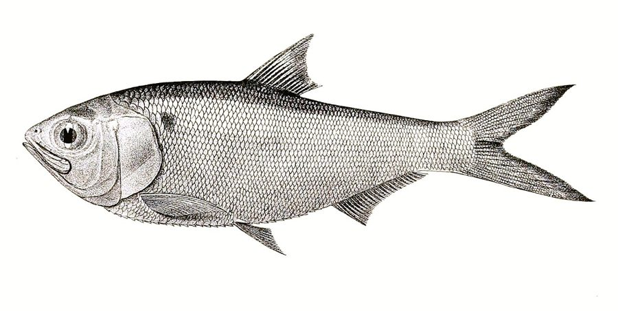

चपराIndian River Shad
Gudusia chapra · Clupeidae · FSH-0028

- Scientific name
- Gudusia chapra (Hamilton, 1822)
- Family
- Clupeidae
- Hindi
- चपरा
- Local names
- chapra, chapila, khaira, chapra machhli, river shad
- Status here
- native
- Movement
- Resident, here all year
- IUCN
- LC
- Review
- audited and independently read
When to look कब देखें
Present all year.
Uses and possibilities उपयोग और संभावनाएँ
Drawn from the documented uses in the profile below, where each is labelled traditional, current or a research lead. All uses →
चपरा / Chapra
Gudusia chapra (Hamilton, 1822) — Clupeidae
चपरा — नदी और बड़े तालाब की मछली, पेट झोली जैसा। प्लैंकटन खाती है। महीन माँस, स्वाद अच्छा। छोटी कँटें, सब खा जाते हैं।
Quick Identification त्वरित पहचान
| Feature | Description |
|---|---|
| Size | 5–8 cm |
| Body | Compressed laterally, deep-bellied; sharp keeled abdomen |
| Scales | Large, silvery; thin and easily shed |
| Gill cover | Striated; silvery |
| Colour | Silvery-blue above, silvery below |
| Distinctive | Deep belly, keeled abdomen, schooling behaviour |
Field tip: A silvery shad fish, compressed laterally with a deep belly. Found in schools in rivers and large ponds. Often schooling with other shads and small fish.
हिंदी: नदी की छोटी, चाँदी जैसी मछली, झुंड में।
Morphology आकारिकी
Biometrics (river populations):
| Measurement | Range |
|---|---|
| Standard length | 5–8 cm |
| Body depth | 30–35% of standard length |
| Weight | 4–8 g |
| Gill rakers | 40–50 (filter-feeding apparatus) |
| Dorsal fin rays | 16–18 |
Body form: Compressed laterally, with a characteristically deep belly (ventral profile sharply arched). The abdomen is keeled with enlarged ventral scales forming a sharp ridge. This form is typical of planktivorous shads.
Scales: Large cycloid scales, silvery and loosely attached; the scales easily slough off during handling.
Gill apparatus: Modified for filter-feeding: many gill rakers (40–50) on the gill arches to trap plankton from water passing through the gills.
Mouth: Small, terminal, opening upward; adapted for gulping surface water and plankton.
हिंदी: पेट गहरा, शरीर झोली जैसा। बड़े शल्क, चाँदी जैसे। गिल बहुत धागे वाले।
Behaviour & Ecology व्यवहार और पारिस्थितिकता
A planktivorous fish, filtering zooplankton and phytoplankton from water by gulping and straining through gill rakers. Schools in open water of rivers and large ponds; migratory in rivers, moving into floodplain pools in monsoon for breeding. Tolerates turbid water. Feeds primarily on copepods, cladocera and other zooplankton. In monsoon, when water levels rise and floodplain connectivity increases, populations expand into temporary wetlands and rice paddies.
Life Cycle / Phenology जीवन चक्र
| Stage / season | Event |
|---|---|
| March–May | Slow growth in cool, clear water; maturation progresses |
| June–August | Monsoon flooding; movement into floodplain and rice paddies for breeding |
| Eggs | Released into flowing water; pelagic development; millions of eggs |
| Larvae | Drift downstream; feed on rotifers and small copepods |
| Fry, 3–4 weeks | Rapid growth in warm, food-rich floodplain water |
| Sexual maturity | 1–2 years |
| Lifespan | 4–5 years |
हिंदी: बरसात में खेतों में जाकर प्रजनन; अंडे बहते पानी में; लार्वे बहते हैं; तेज़ी से बड़े होते हैं।
Host Plants or Prey आहार
- Zooplankton: Copepods, cladocera (Daphnia), ostracods
- Phytoplankton: Algae and fine organic particles
- Detritus: Small particles of degraded organic matter
Predators / Natural Enemies शत्रु
- Birds: Indian Pond Heron, Little Egret, cormorants and other piscivorous water birds
- Fish: Large catfish, snakeheads, larger cyprinids
- People: Netted commercially in rivers; important fishery
Agricultural / Human Relevance कृषि प्रासंगिकता
Food. An important food fish in the region. Caught in nets from rivers and large ponds and sold at local markets. The flesh is white, soft and sweet; easily filleted. Small bones; generally cooked whole or minced. Protein-rich and affordable for rural populations. Historically important in monsoon fisheries when populations peak in floodplain water bodies.
Fisheries: In the Ganga system and floodplain water bodies, Gudusia chapra is harvested commercially alongside larger carps. Catch volumes decline in dry season when floodplain connectivity decreases.
Composite fish culture: Sometimes included in large ponds as a planktivore component.
Today. Abundant in monsoon in floodplain water; less common in dry season.
Research direction (a lead, not a result). Population dynamics and seasonal movements of Gudusia chapra in relation to monsoon timing and floodplain connectivity have not been studied locally.
हिंदी: अच्छी खाई जाने वाली मछली। नदी में नेट से पकड़ी जाती है। मानसून में तालाबों में भर जाती है।
Expected Locally स्थानीय रूप से अपेक्षित
Not a field record. Written from published accounts for eastern Uttar Pradesh. No confirmed local sighting yet — if you have seen it, that is what the atlas needs.
अभी तक स्थानीय पुष्टि नहीं। यह विवरण प्रकाशित स्रोतों से है, किसी अवलोकन से नहीं।
To be expected in rivers and large floodplain water bodies throughout the district, particularly during and after monsoon. A net catch or photograph is a confirmed record.
Distribution वितरण
Global range: South Asia; native to the Indo-Gangetic region and Brahmaputra system.
In India: Throughout the Ganga system and associated flood plains of the north-east and east.
In Uttar Pradesh: Rivers and floodplain water bodies of the eastern plains.
In Basti / eastern UP: Expected in the Ghaghara/Rapti river system and floodplain water bodies.
Research Questions शोध प्रश्न
Anyone can investigate these | कोई भी इन प्रश्नों की जाँच कर सकता है
- What zooplankton taxa are consumed, and do these vary seasonally? — Stomach content analysis.
- When do chapra move from rivers into floodplain ponds, and when do they return? — Monitor a floodplain channel monthly.
- What is the annual catch from nets in the district's rivers and ponds? — Survey fishers and markets.
- Does catch decline in dry season, and why? — Compare monsoon vs. dry season abundance.
- What is the age structure from scale reading, and how does it relate to breeding season? — Otolith analysis.
Similar Species मिलती-जुलती प्रजातियाँ
| Species | How to tell apart | हिंदी |
|---|---|---|
| Rohu (Labeo rohita) | Much larger (20–60 cm); head and mouth larger; body deeper; not planktivorous | बहुत बड़ी |
| Tenualosa species | Larger (10–20 cm); different habitat (coastal); more compressed body | नदी के मुहाने में |
| Other Gudusia spp. | Few other congeners in the region; sympatric confusion unlikely | दुर्लभ |
Field rule: A small, silvery, laterally compressed shad with a deep belly and schooling behaviour in rivers and large ponds is a chapra.
Taxonomy & Classification वर्गीकरण
Original description. Described by Francis Hamilton in 1822 in An Account of the Fishes Found in the River Ganges and Its Branches, p. 241, from the Ganges.
Subspecies. Monotypic — no subspecies are recognised.
Family and order placement. Clupeidae, the herring and shad family; order Clupeiformes.
Phylogenetic notes. Gudusia is a genus of small South Asian shads; its position within Clupeidae is well-supported.
IUCN status rationale. Least Concern. Widespread and abundant in suitable habitat; stable in range.
Photo Gallery फोटो गैलरी
Photos needed आवश्यक फोटो
- [ ] School in river (नदी में झुंड)
- [ ] Close-up showing silvery scales (चाँदी जैसे शल्क)
- [ ] Net catch from river (नेट से पकड़ी मछली)
- [ ] Deep belly profile (पेट की गहराई)
No photos yet — add field photos to media/species/chapra/ and run node scripts/sync_photos.js.
References संदर्भ
- Hamilton, F. (1822). An Account of the Fishes Found in the River Ganges and Its Branches, p. 241. Edinburgh University Press.
- Day, F. (1878). The Fishes of India, vol. 1. Williams and Norgate, London.
- Hora, S.L. & Pillay, T.V.R. (1962). Handbook of fish culture in the Indo-Pacific region. FAO Fisheries Biology Technical Paper no. 14.
- Talwar, P.K. & Jhingran, A.G. (1991). Inland Fishes of India and Adjacent Countries, vol. 1. Balkema, Rotterdam.
- Jhingran, A.G. (1991). Fish and Fisheries of India, 3rd ed. Hindustan Publishing Corporation, Delhi.
- GBIF Occurrence Data — Gudusia chapra, India (2026).
Source file: species/fauna/fish/chapra.md